Groundwater elevation contours
How have groundwater levels across Santa Clara County shifted over 25 years of drought and recovery?
During my Valley Water internship I built a repeatable workflow to answer that. I cleaned 25 years of monitoring-well records, interpolated groundwater elevations in R with thin plate splines, and generated a contour surface for every five years. I published the surfaces as a time-enabled web map in ArcGIS Online and wrapped them in a StoryMap so staff can step through the years.
Result: I pitched it to my team as a template that can be rerun as new well readings come in.